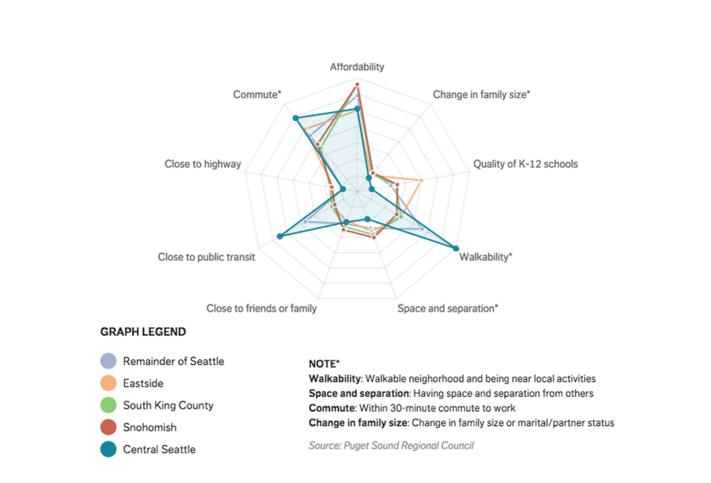

Prérequis :
Avoir une connexion à internet
Lancer la visualisation avec Safari
Visualisation 1: Evolution du PIB des pays africains dans le temps
Description: Cette visualisation du portail africain de l'information rentre dans la catégorie "Reader Driven" décrite dans la présentation. En effet, cette représentation donne davantage d'importance à l'interactivité et à l'exploration des données. Le lecteur peut observer la variation du PIB via deux axes: Temps et pays. Ces deux axes peuvent être choisis librement par le lecteur à des fins exploratoires
Visualisation 2: Quels sont les critères importants pour choisir son logement à Seattle ?
Description: Contrairement à la précédent, cette visualisation du Seattle Times est une réponse à la question qui est posée par l'auteur "Quels sont les critères importants pour choisir son logement à Seattle ?" La visualisation n'est pas totalement guidée mais permet d'apporter une réponse à la question via les éléments fournis par l'auteur c'est en ce sens qu'elle est "Author Driven". On comprend par exemple que les critères de choix sont les mêmes quels que soient le quartier à part pour le centre-ville où les critères d'accessibilité et de transport prennent le dessus
Visualisation 3: Qu'est ce qui provoque le réchauffement climatique ?
Description: Cette visualisation de Bloomberg est une réponse à la question posée par l'auteur. Elle est le produit d'une exploration menée par l'auteur, c'est pour cela qu'elle est totalement "Author Driven" car il nous invite à découvrir son raisonnement
Lien vers la visu